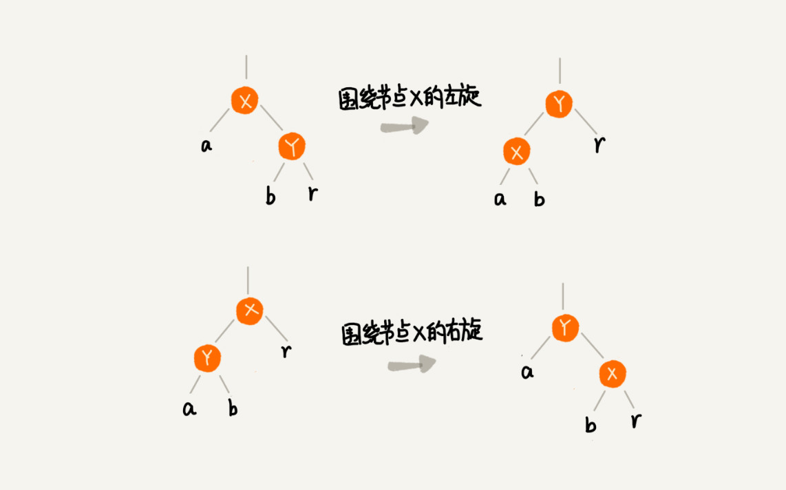
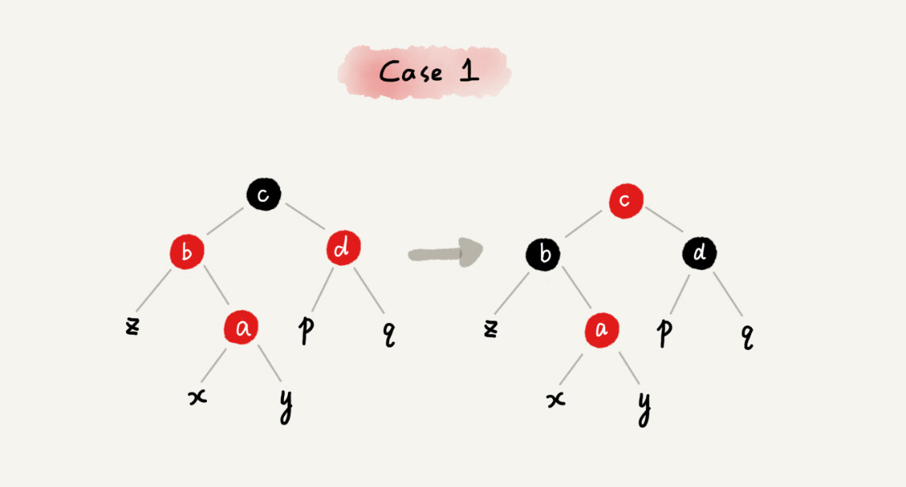
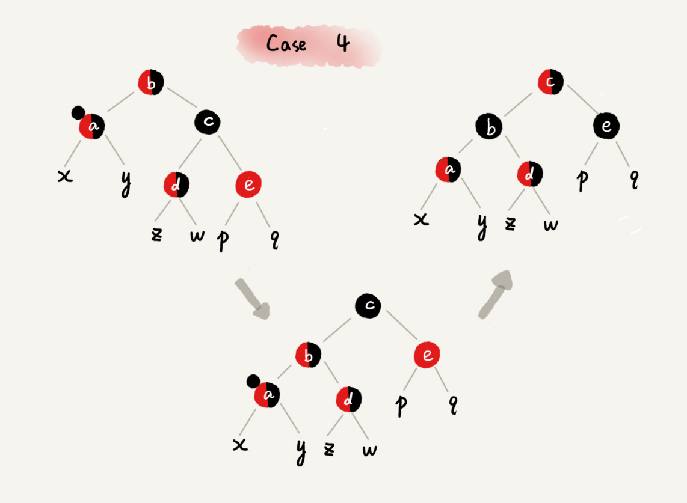

<!DOCTYPE html>
<html lang="zh-CN">
<head>
  <meta charset="UTF-8">
<meta name="viewport" content="width=device-width, initial-scale=1, maximum-scale=2">
<meta name="theme-color" content="#222">
<meta name="generator" content="Hexo 4.2.0">
  <link rel="apple-touch-icon" sizes="180x180" href="/images/apple-touch-icon-next.png">
  <link rel="icon" type="image/png" sizes="32x32" href="/images/favicon.ico">
  <link rel="icon" type="image/png" sizes="16x16" href="/images/favicon-16x16-next.png">
  <link rel="mask-icon" href="/images/logo.svg" color="#222">

<link rel="stylesheet" href="/css/main.css">


<link rel="stylesheet" href="/lib/font-awesome/css/all.min.css">
  <link rel="stylesheet" href="//cdn.jsdelivr.net/gh/fancyapps/fancybox@3/dist/jquery.fancybox.min.css">

<script id="hexo-configurations">
    var NexT = window.NexT || {};
    var CONFIG = {"hostname":"onlygodsee.github.io","root":"/","scheme":"Mist","version":"7.8.0","exturl":false,"sidebar":{"position":"left","display":"post","padding":18,"offset":12,"onmobile":false},"copycode":{"enable":false,"show_result":false,"style":null},"back2top":{"enable":true,"sidebar":false,"scrollpercent":false},"bookmark":{"enable":false,"color":"#222","save":"auto"},"fancybox":true,"mediumzoom":false,"lazyload":false,"pangu":false,"comments":{"style":"tabs","active":null,"storage":true,"lazyload":false,"nav":null},"algolia":{"hits":{"per_page":10},"labels":{"input_placeholder":"Search for Posts","hits_empty":"We didn't find any results for the search: ${query}","hits_stats":"${hits} results found in ${time} ms"}},"localsearch":{"enable":true,"trigger":"auto","top_n_per_article":1,"unescape":false,"preload":false},"motion":{"enable":true,"async":false,"transition":{"post_block":"fadeIn","post_header":"slideDownIn","post_body":"slideDownIn","coll_header":"slideLeftIn","sidebar":"slideUpIn"}},"path":"search.xml"};
  </script>

  <meta name="description" content="掌握这些技巧，你也可以实现一个红黑树">
<meta property="og:type" content="article">
<meta property="og:title" content="红黑树（下）">
<meta property="og:url" content="http://onlygodsee.github.io/2020/09/07/article-51/index.html">
<meta property="og:site_name" content="太液池">
<meta property="og:description" content="掌握这些技巧，你也可以实现一个红黑树">
<meta property="og:locale" content="zh_CN">
<meta property="og:image" content="http://onlygodsee.github.io/2020/09/07/article-51/0e37e597737012593a93105ebbf4591e.jpg">
<meta property="og:image" content="http://onlygodsee.github.io/2020/09/07/article-51/603cf91f54b5db21bd02c6c5678ecf40.jpg">
<meta property="og:image" content="http://onlygodsee.github.io/2020/09/07/article-51/4480a314f9d83c343b8adbb28b6782ad.jpg">
<meta property="og:image" content="http://onlygodsee.github.io/2020/09/07/article-51/04650d9470b1e67899f5b8b7b8e33212.jpg">
<meta property="og:image" content="http://onlygodsee.github.io/2020/09/07/article-51/a6c4c347b7cbdf57662bab399ed36cc3.jpg">
<meta property="og:image" content="http://onlygodsee.github.io/2020/09/07/article-51/48e3bd2cdd66cb635f8a4df8fb8fd64e.jpg">
<meta property="og:image" content="http://onlygodsee.github.io/2020/09/07/article-51/b93c1fa4de16aee5482424ddf49f3c29.jpg">
<meta property="og:image" content="http://onlygodsee.github.io/2020/09/07/article-51/ac76d78c064a2486e2a5b4c4903acb91.jpg">
<meta property="og:image" content="http://onlygodsee.github.io/2020/09/07/article-51/eca118d673c607eb2b103f3476fb24ec.jpg">
<meta property="og:image" content="http://onlygodsee.github.io/2020/09/07/article-51/44075213100edd70315e1492422c92af.jpg">
<meta property="og:image" content="http://onlygodsee.github.io/2020/09/07/article-51/5f73f61bf77a7f2bb75f168cf432ec44.jpg">
<meta property="article:published_time" content="2020-09-07T08:44:14.000Z">
<meta property="article:modified_time" content="2020-09-10T04:59:57.490Z">
<meta property="article:author" content="涧石">
<meta property="article:tag" content="基础篇">
<meta property="article:tag" content="数据结构与算法">
<meta name="twitter:card" content="summary">
<meta name="twitter:image" content="http://onlygodsee.github.io/2020/09/07/article-51/0e37e597737012593a93105ebbf4591e.jpg">

<link rel="canonical" href="http://onlygodsee.github.io/2020/09/07/article-51/">


<script id="page-configurations">
  // https://hexo.io/docs/variables.html
  CONFIG.page = {
    sidebar: "",
    isHome : false,
    isPost : true,
    lang   : 'zh-CN'
  };
</script>

  <title>红黑树（下） | 太液池</title>
  


  <script>
    var _hmt = _hmt || [];
    (function() {
      var hm = document.createElement("script");
      hm.src = "https://hm.baidu.com/hm.js?02189f42c1a6b074aac7e82ae5ba1f4b";
      var s = document.getElementsByTagName("script")[0];
      s.parentNode.insertBefore(hm, s);
    })();
  </script>


  <noscript>
  <style>
  .use-motion .brand,
  .use-motion .menu-item,
  .sidebar-inner,
  .use-motion .post-block,
  .use-motion .pagination,
  .use-motion .comments,
  .use-motion .post-header,
  .use-motion .post-body,
  .use-motion .collection-header { opacity: initial; }

  .use-motion .site-title,
  .use-motion .site-subtitle {
    opacity: initial;
    top: initial;
  }

  .use-motion .logo-line-before i { left: initial; }
  .use-motion .logo-line-after i { right: initial; }
  </style>
</noscript>

</head>

<body itemscope itemtype="http://schema.org/WebPage">
  <div class="container use-motion">
    <div class="headband"></div>

    <header class="header" itemscope itemtype="http://schema.org/WPHeader">
      <div class="header-inner"><div class="site-brand-container">
  <div class="site-nav-toggle">
    <div class="toggle" aria-label="切换导航栏">
      <span class="toggle-line toggle-line-first"></span>
      <span class="toggle-line toggle-line-middle"></span>
      <span class="toggle-line toggle-line-last"></span>
    </div>
  </div>

  <div class="site-meta">

    <a href="/" class="brand" rel="start">
      <span class="logo-line-before"><i></i></span>
      <h1 class="site-title">太液池</h1>
      <span class="logo-line-after"><i></i></span>
    </a>
  </div>

  <div class="site-nav-right">
    <div class="toggle popup-trigger">
        <i class="fa fa-search fa-fw fa-lg"></i>
    </div>
  </div>
</div>


<nav class="site-nav">
  <ul id="menu" class="main-menu menu">
        <li class="menu-item menu-item-home">

    <a href="/" rel="section"><i class="fa fa-home fa-fw"></i>首页</a>

  </li>
        <li class="menu-item menu-item-about">

    <a href="/about/" rel="section"><i class="fa fa-user fa-fw"></i>关于</a>

  </li>
        <li class="menu-item menu-item-tags">

    <a href="/tags/" rel="section"><i class="fa fa-tags fa-fw"></i>标签</a>

  </li>
        <li class="menu-item menu-item-categories">

    <a href="/categories/" rel="section"><i class="fa fa-th fa-fw"></i>分类</a>

  </li>
        <li class="menu-item menu-item-archives">

    <a href="/archives/" rel="section"><i class="fa fa-archive fa-fw"></i>归档</a>

  </li>
      <li class="menu-item menu-item-search">
        <a role="button" class="popup-trigger"><i class="fa fa-search fa-fw"></i>搜索
        </a>
      </li>
  </ul>
</nav>


  <div class="search-pop-overlay">
    <div class="popup search-popup">
        <div class="search-header">
  <span class="search-icon">
    <i class="fa fa-search"></i>
  </span>
  <div class="search-input-container">
    <input autocomplete="off" autocapitalize="off"
           placeholder="搜索..." spellcheck="false"
           type="search" class="search-input">
  </div>
  <span class="popup-btn-close">
    <i class="fa fa-times-circle"></i>
  </span>
</div>
<div id="search-result">
  <div id="no-result">
    <i class="fa fa-spinner fa-pulse fa-5x fa-fw"></i>
  </div>
</div>

    </div>
  </div>

</div>
    </header>

    
  <div class="back-to-top">
    <i class="fa fa-arrow-up"></i>
    <span>0%</span>
  </div>


    <main class="main">
      <div class="main-inner">
        <div class="content-wrap">
          

          <div class="content post posts-expand">
            

    
  
  
  <article itemscope itemtype="http://schema.org/Article" class="post-block" lang="zh-CN">
    <link itemprop="mainEntityOfPage" href="http://onlygodsee.github.io/2020/09/07/article-51/">

    <span hidden itemprop="author" itemscope itemtype="http://schema.org/Person">
      <meta itemprop="image" content="/images/blog_head.png">
      <meta itemprop="name" content="涧石">
      <meta itemprop="description" content="">
    </span>

    <span hidden itemprop="publisher" itemscope itemtype="http://schema.org/Organization">
      <meta itemprop="name" content="太液池">
    </span>
      <header class="post-header">
        <h1 class="post-title" itemprop="name headline">
          红黑树（下）
        </h1>

        <div class="post-meta">
            <span class="post-meta-item">
              <span class="post-meta-item-icon">
                <i class="far fa-calendar"></i>
              </span>
              <span class="post-meta-item-text">发表于</span>

              <time title="创建时间：2020-09-07 16:44:14" itemprop="dateCreated datePublished" datetime="2020-09-07T16:44:14+08:00">2020-09-07</time>
            </span>
              <span class="post-meta-item">
                <span class="post-meta-item-icon">
                  <i class="far fa-calendar-check"></i>
                </span>
                <span class="post-meta-item-text">更新于</span>
                <time title="修改时间：2020-09-10 12:59:57" itemprop="dateModified" datetime="2020-09-10T12:59:57+08:00">2020-09-10</time>
              </span>
            <span class="post-meta-item">
              <span class="post-meta-item-icon">
                <i class="far fa-folder"></i>
              </span>
              <span class="post-meta-item-text">分类于</span>
                <span itemprop="about" itemscope itemtype="http://schema.org/Thing">
                  <a href="/categories/%E6%95%B0%E6%8D%AE%E7%BB%93%E6%9E%84%E4%B8%8E%E7%AE%97%E6%B3%95/" itemprop="url" rel="index"><span itemprop="name">数据结构与算法</span></a>
                </span>
            </span>

          
            <span class="post-meta-item" title="阅读次数" id="busuanzi_container_page_pv" style="display: none;">
              <span class="post-meta-item-icon">
                <i class="fa fa-eye"></i>
              </span>
              <span class="post-meta-item-text">阅读次数：</span>
              <span id="busuanzi_value_page_pv"></span>
            </span>

        </div>
      </header>

    
    
    
    <div class="post-body" itemprop="articleBody">

      
        <p>掌握这些技巧，你也可以实现一个红黑树</p>
<a id="more"></a>

<h3 id="实现红黑树的基本思想"><a href="#实现红黑树的基本思想" class="headerlink" title="实现红黑树的基本思想"></a>实现红黑树的基本思想</h3><p>主体流程：遇到什么样的节点排布，我们就对应怎么去调整。</p>
<p>两个重要操作：<strong><em>左旋、右旋</em></strong></p>
<p></p>
<h3 id="插入操作的平衡调整"><a href="#插入操作的平衡调整" class="headerlink" title="插入操作的平衡调整"></a>插入操作的平衡调整</h3><h4 id="插入"><a href="#插入" class="headerlink" title="插入"></a>插入</h4><p><strong><em>红黑树规定，插入的节点必须是红色的。而且，二叉查找树中新插入的节点都是放在叶子节点上。</em></strong>所以，关于插入操作的平衡调整，有这样两种特殊情况，但是也都非常好处理。</p>
<ul>
<li>如果插入节点的父节点是黑色的，那我们什么都不用做，它仍然满足红黑树的定义。</li>
<li>如果插入的节点是根节点，那我们直接改变它的颜色，把它变成黑色就可以了。</li>
</ul>
<p>除此之外，其他情况都会违背红黑树的定义，于是我们就需要进行调整，调整的过程包含两种基础的操作：<strong><em>左右旋转和改变颜色</em></strong>。</p>
<p>红黑树的平衡调整过程是一个迭代的过程。我们把正在处理的节点叫做<strong><em>关注节点</em></strong>。关注节点会随着不停地迭代处理，而不断发生变化。最开始的关注节点就是新插入的节点。</p>
<p>一般有三种情况：</p>
<h5 id="CASE-1："><a href="#CASE-1：" class="headerlink" title="CASE 1："></a>CASE 1：</h5><p>如果关注节点是 a，它的叔叔节点 d 是红色，我们就依次执行下面的操作：</p>
<ul>
<li>将关注节点 a 的父节点 b、叔叔节点 d 的颜色都设置成黑色；</li>
<li>将关注节点 a 的祖父节点 c 的颜色设置成红色；</li>
<li>关注节点变成 a 的祖父节点 c；</li>
<li>跳到 CASE 2 或者 CASE 3。</li>
</ul>
<p></p>
<h5 id="CASE-2："><a href="#CASE-2：" class="headerlink" title="CASE 2："></a>CASE 2：</h5><p>如果关注节点是 a，它的叔叔节点 d 是黑色，关注节点 a 是其父节点 b 的右子节点，我们就依次执行下面的操作：</p>
<ul>
<li>关注节点变成节点 a 的父节点 b；</li>
<li>围绕新的关注节点b 左旋；</li>
<li>跳到 CASE 3。</li>
</ul>
<p></p>
<h5 id="CASE-3："><a href="#CASE-3：" class="headerlink" title="CASE 3："></a>CASE 3：</h5><p>如果关注节点是 a，它的叔叔节点 d 是黑色，关注节点 a 是其父节点 b 的左子节点，我们就依次执行下面的操作：</p>
<ul>
<li>围绕关注节点 a 的祖父节点 c 右旋；</li>
<li>将关注节点 a 的父节点 b、兄弟节点 c 的颜色互换。</li>
<li>调整结束。</li>
</ul>
<p></p>
<h3 id="删除操作的平衡调整"><a href="#删除操作的平衡调整" class="headerlink" title="删除操作的平衡调整"></a>删除操作的平衡调整</h3><p>删除操作的平衡调整分为两步：</p>
<p>第一步是<strong><em>针对删除节点初步调整</em></strong>。初步调整只是保证整棵红黑树在一个节点删除之后，仍然满足最后一条定义的要求，也就是说，每个节点，从该节点到达其可达叶子节点的所有路径，都包含相同数目的黑色节点；</p>
<p>第二步是<strong><em>针对关注节点进行二次调整</em></strong>，让它满足红黑树的第三条定义，即不存在相邻的两个红色节点。</p>
<h4 id="针对删除节点初步调整"><a href="#针对删除节点初步调整" class="headerlink" title="针对删除节点初步调整"></a>针对删除节点初步调整</h4><p>红黑树的定义中“只包含红色节点和黑色节点”，经过初步调整之后，为了保证满足红黑树定义的最后一条要求，<strong><em>有些节点会被标记成两种颜色，“红 - 黑”或者“黑 - 黑”。如果一个节点被标记为了“黑 - 黑”</em></strong>，那在计算黑色节点个数的时候，要算成两个黑色节点。</p>
<h5 id="CASE-1：-1"><a href="#CASE-1：-1" class="headerlink" title="CASE 1："></a>CASE 1：</h5><p>如果要删除的节点是 a，它只有一个子节点 b，那我们就依次进行下面的操作：</p>
<ul>
<li>删除节点 a，并且把节点 b 替换到节点 a 的位置，这一部分操作跟普通的二叉查找树的删除操作一样；</li>
<li>节点 a 只能是黑色，节点 b 也只能是红色，其他情况均不符合红黑树的定义。这种情况下，我们把节点 b 改为黑色；</li>
<li>调整结束，不需要进行二次调整。</li>
</ul>
<p></p>
<h5 id="CASE-2：-1"><a href="#CASE-2：-1" class="headerlink" title="CASE 2："></a>CASE 2：</h5><p><strong><em>如果要删除的节点 a 有两个非空子节点，并且它的后继节点就是节点 a 的右子节点 c。</em></strong>我们就依次进行下面的操作：</p>
<ul>
<li>如果节点 a 的后继节点就是右子节点 c，那右子节点 c 肯定没有左子树。我们把节点 a 删除，并且将节点 c 替换到节点 a 的位置。这一部分操作跟普通的二叉查找树的删除操作无异；</li>
<li>然后把节点 c 的颜色设置为跟节点 a 相同的颜色；</li>
<li>如果节点 c 是黑色，为了不违反红黑树的最后一条定义，我们给节点 c 的右子节点 d 多加一个黑色，这个时候节点 d 就成了“红 - 黑”或者“黑 - 黑”；</li>
<li>这个时候，关注节点变成了节点 d，第二步的调整操作就会针对关注节点来做。</li>
</ul>
<p></p>
<h5 id="CASE-3：-1"><a href="#CASE-3：-1" class="headerlink" title="CASE 3："></a>CASE 3：</h5><p><strong><em>如果要删除的是节点 a，它有两个非空子节点，并且节点 a 的后继节点不是右子节点</em></strong>，我们就依次进行下面的操作：</p>
<ul>
<li>找到后继节点 d，并将它删除，删除后继节点 d 的过程参照 CASE 1；</li>
<li>将节点 a 替换成后继节点 d；</li>
<li>把节点 d 的颜色设置为跟节点 a 相同的颜色；</li>
<li>如果节点 d 是黑色，为了不违反红黑树的最后一条定义，我们给节点 d 的右子节点 c 多加一个黑色，这个时候节点 c 就成了“红 - 黑”或者“黑 - 黑”；</li>
<li>这个时候，关注节点变成了节点 c，第二步的调整操作就会针对关注节点来做。</li>
</ul>
<p></p>
<h4 id="针对关注节点进行二次调整"><a href="#针对关注节点进行二次调整" class="headerlink" title="针对关注节点进行二次调整"></a>针对关注节点进行二次调整</h4><p>二次调整是为了让红黑树中不存在相邻的红色节点。</p>
<h5 id="CASE-1：-2"><a href="#CASE-1：-2" class="headerlink" title="CASE 1："></a>CASE 1：</h5><p><strong><em>如果关注节点是 a，它的兄弟节点 c 是红色的，</em></strong>我们就依次进行下面的操作：</p>
<ul>
<li>围绕关注节点 a 的父节点 b 左旋；</li>
<li>关注节点 a 的父节点 b 和祖父节点 c 交换颜色；</li>
<li>关注节点不变；</li>
<li>继续从四种情况中选择适合的规则来调整。</li>
</ul>
<p></p>
<h5 id="CASE-2：-2"><a href="#CASE-2：-2" class="headerlink" title="CASE 2："></a>CASE 2：</h5><p><strong><em>如果关注节点是 a，它的兄弟节点 c 是黑色的，并且节点 c 的左右子节点 d、e 都是黑色的，</em></strong>我们就依次进行下面的操作：</p>
<ul>
<li>将关注节点 a 的兄弟节点 c 的颜色变成红色；</li>
<li>从关注节点 a 中去掉一个黑色，这个时候节点 a 就是单纯的红色或者黑色；</li>
<li>给关注节点 a 的父节点 b 添加一个黑色，这个时候节点 b 就变成了“红 - 黑”或者“黑 - 黑”；</li>
<li>关注节点从 a 变成其父节点 b；</li>
<li>继续从四种情况中选择符合的规则来调整。</li>
</ul>
<p></p>
<h5 id="CASE-3：-2"><a href="#CASE-3：-2" class="headerlink" title="CASE 3："></a>CASE 3：</h5><p><strong><em>如果关注节点是 a，它的兄弟节点 c 是黑色，c 的左子节点 d 是红色，c 的右子节点 e 是黑色，</em></strong>我们就依次进行下面的操作：</p>
<ul>
<li>围绕关注节点 a 的兄弟节点 c 右旋；</li>
<li>节点 c 和节点 d 交换颜色；</li>
<li>关注节点不变；</li>
<li>跳转到 CASE 4，继续调整。</li>
</ul>
<p></p>
<h5 id="CASE-4："><a href="#CASE-4：" class="headerlink" title="CASE 4："></a>CASE 4：</h5><p><strong><em>如果关注节点 a 的兄弟节点 c 是黑色的，并且 c 的右子节点是红色的，</em></strong>我们就依次进行下面的操作：</p>
<ul>
<li>围绕关注节点 a 的父节点 b 左旋；</li>
<li>将关注节点 a 的兄弟节点 c 的颜色，跟关注节点 a 的父节点 b 设置成相同的颜色；</li>
<li>将关注节点 a 的父节点 b 的颜色设置为黑色；</li>
<li>从关注节点 a 中去掉一个黑色，节点 a 就变成了单纯的红色或者黑色；</li>
<li>将关注节点 a 的叔叔节点 e 设置为黑色；</li>
<li>调整结束。</li>
</ul>
<p></p>
<h3 id="内容总结"><a href="#内容总结" class="headerlink" title="内容总结"></a>内容总结</h3><p>第一点，<strong><em>把红黑树的平衡调整的过程比作魔方复原，不要过于深究这个算法的正确性。</em></strong></p>
<p>第二点，<strong><em>找准关注节点，不要搞丢、搞错关注节点。</em></strong></p>
<p>第三点，<strong><em>插入操作的平衡调整比较简单，但是删除操作就比较复杂。</em></strong></p>

    </div>

    
    
    

      <footer class="post-footer">
          <div class="post-tags">
              <a href="/tags/%E5%9F%BA%E7%A1%80%E7%AF%87/" rel="tag"># 基础篇</a>
              <a href="/tags/%E6%95%B0%E6%8D%AE%E7%BB%93%E6%9E%84%E4%B8%8E%E7%AE%97%E6%B3%95/" rel="tag"># 数据结构与算法</a>
          </div>

        


        
    <div class="post-nav">
      <div class="post-nav-item">
    <a href="/2020/09/07/article-50/" rel="prev" title="红黑树（上）">
      <i class="fa fa-chevron-left"></i> 红黑树（上）
    </a></div>
      <div class="post-nav-item">
    <a href="/2020/09/08/article-52/" rel="next" title="递归树">
      递归树 <i class="fa fa-chevron-right"></i>
    </a></div>
    </div>
      </footer>
    
  </article>
  
  
  


          </div>
          

<script>
  window.addEventListener('tabs:register', () => {
    let { activeClass } = CONFIG.comments;
    if (CONFIG.comments.storage) {
      activeClass = localStorage.getItem('comments_active') || activeClass;
    }
    if (activeClass) {
      let activeTab = document.querySelector(`a[href="#comment-${activeClass}"]`);
      if (activeTab) {
        activeTab.click();
      }
    }
  });
  if (CONFIG.comments.storage) {
    window.addEventListener('tabs:click', event => {
      if (!event.target.matches('.tabs-comment .tab-content .tab-pane')) return;
      let commentClass = event.target.classList[1];
      localStorage.setItem('comments_active', commentClass);
    });
  }
</script>

        </div>
          
  
  <div class="toggle sidebar-toggle">
    <span class="toggle-line toggle-line-first"></span>
    <span class="toggle-line toggle-line-middle"></span>
    <span class="toggle-line toggle-line-last"></span>
  </div>

  <aside class="sidebar">
    <div class="sidebar-inner">

      <ul class="sidebar-nav motion-element">
        <li class="sidebar-nav-toc">
          文章目录
        </li>
        <li class="sidebar-nav-overview">
          站点概览
        </li>
      </ul>

      <!--noindex-->
      <div class="post-toc-wrap sidebar-panel">
          <div class="post-toc motion-element"><ol class="nav"><li class="nav-item nav-level-3"><a class="nav-link" href="#实现红黑树的基本思想"><span class="nav-number">1.</span> <span class="nav-text">实现红黑树的基本思想</span></a></li><li class="nav-item nav-level-3"><a class="nav-link" href="#插入操作的平衡调整"><span class="nav-number">2.</span> <span class="nav-text">插入操作的平衡调整</span></a><ol class="nav-child"><li class="nav-item nav-level-4"><a class="nav-link" href="#插入"><span class="nav-number">2.1.</span> <span class="nav-text">插入</span></a><ol class="nav-child"><li class="nav-item nav-level-5"><a class="nav-link" href="#CASE-1："><span class="nav-number">2.1.1.</span> <span class="nav-text">CASE 1：</span></a></li><li class="nav-item nav-level-5"><a class="nav-link" href="#CASE-2："><span class="nav-number">2.1.2.</span> <span class="nav-text">CASE 2：</span></a></li><li class="nav-item nav-level-5"><a class="nav-link" href="#CASE-3："><span class="nav-number">2.1.3.</span> <span class="nav-text">CASE 3：</span></a></li></ol></li></ol></li><li class="nav-item nav-level-3"><a class="nav-link" href="#删除操作的平衡调整"><span class="nav-number">3.</span> <span class="nav-text">删除操作的平衡调整</span></a><ol class="nav-child"><li class="nav-item nav-level-4"><a class="nav-link" href="#针对删除节点初步调整"><span class="nav-number">3.1.</span> <span class="nav-text">针对删除节点初步调整</span></a><ol class="nav-child"><li class="nav-item nav-level-5"><a class="nav-link" href="#CASE-1：-1"><span class="nav-number">3.1.1.</span> <span class="nav-text">CASE 1：</span></a></li><li class="nav-item nav-level-5"><a class="nav-link" href="#CASE-2：-1"><span class="nav-number">3.1.2.</span> <span class="nav-text">CASE 2：</span></a></li><li class="nav-item nav-level-5"><a class="nav-link" href="#CASE-3：-1"><span class="nav-number">3.1.3.</span> <span class="nav-text">CASE 3：</span></a></li></ol></li><li class="nav-item nav-level-4"><a class="nav-link" href="#针对关注节点进行二次调整"><span class="nav-number">3.2.</span> <span class="nav-text">针对关注节点进行二次调整</span></a><ol class="nav-child"><li class="nav-item nav-level-5"><a class="nav-link" href="#CASE-1：-2"><span class="nav-number">3.2.1.</span> <span class="nav-text">CASE 1：</span></a></li><li class="nav-item nav-level-5"><a class="nav-link" href="#CASE-2：-2"><span class="nav-number">3.2.2.</span> <span class="nav-text">CASE 2：</span></a></li><li class="nav-item nav-level-5"><a class="nav-link" href="#CASE-3：-2"><span class="nav-number">3.2.3.</span> <span class="nav-text">CASE 3：</span></a></li><li class="nav-item nav-level-5"><a class="nav-link" href="#CASE-4："><span class="nav-number">3.2.4.</span> <span class="nav-text">CASE 4：</span></a></li></ol></li></ol></li><li class="nav-item nav-level-3"><a class="nav-link" href="#内容总结"><span class="nav-number">4.</span> <span class="nav-text">内容总结</span></a></li></ol></div>
      </div>
      <!--/noindex-->

      <div class="site-overview-wrap sidebar-panel">
        <div class="site-author motion-element" itemprop="author" itemscope itemtype="http://schema.org/Person">
    
  <p class="site-author-name" itemprop="name">涧石</p>
  <div class="site-description" itemprop="description"></div>
</div>
<div class="site-state-wrap motion-element">
  <nav class="site-state">
      <div class="site-state-item site-state-posts">
          <a href="/archives/">
        
          <span class="site-state-item-count">57</span>
          <span class="site-state-item-name">日志</span>
        </a>
      </div>
      <div class="site-state-item site-state-categories">
            <a href="/categories/">
          
        <span class="site-state-item-count">8</span>
        <span class="site-state-item-name">分类</span></a>
      </div>
      <div class="site-state-item site-state-tags">
            <a href="/tags/">
          
        <span class="site-state-item-count">14</span>
        <span class="site-state-item-name">标签</span></a>
      </div>
  </nav>
</div>
  <div class="links-of-author motion-element">
      <span class="links-of-author-item">
        <a href="https://github.com/onlygodsee" title="GitHub → https:&#x2F;&#x2F;github.com&#x2F;onlygodsee" rel="noopener" target="_blank"><i class="fab fa-github fa-fw"></i>GitHub</a>
      </span>
  </div>


      </div>

    </div>
  </aside>
  <div id="sidebar-dimmer"></div>


      </div>
    </main>

    <footer class="footer">
      <div class="footer-inner">
        

        

<div class="copyright">
  
  &copy; 
  <span itemprop="copyrightYear">2020</span>
  <span class="with-love">
    <i class="fa fa-heart"></i>
  </span>
  <span class="author" itemprop="copyrightHolder">涧石</span>
</div>

        
<div class="busuanzi-count">
  <script async src="https://busuanzi.ibruce.info/busuanzi/2.3/busuanzi.pure.mini.js"></script>
    <span class="post-meta-item" id="busuanzi_container_site_uv" style="display: none;">
      <span class="post-meta-item-icon">
        <i class="fa fa-user"></i>
      </span>
      <span class="site-uv" title="总访客量">
        <span id="busuanzi_value_site_uv"></span>
      </span>
    </span>
    <span class="post-meta-divider">|</span>
    <span class="post-meta-item" id="busuanzi_container_site_pv" style="display: none;">
      <span class="post-meta-item-icon">
        <i class="fa fa-eye"></i>
      </span>
      <span class="site-pv" title="总访问量">
        <span id="busuanzi_value_site_pv"></span>
      </span>
    </span>
</div>


      </div>
    </footer>
  </div>

  
  <script src="/lib/anime.min.js"></script>
  <script src="//cdn.jsdelivr.net/npm/jquery@3/dist/jquery.min.js"></script>
  <script src="//cdn.jsdelivr.net/gh/fancyapps/fancybox@3/dist/jquery.fancybox.min.js"></script>
  <script src="/lib/velocity/velocity.min.js"></script>
  <script src="/lib/velocity/velocity.ui.min.js"></script>

<script src="/js/utils.js"></script>

<script src="/js/motion.js"></script>


<script src="/js/schemes/muse.js"></script>


<script src="/js/next-boot.js"></script>


  


  
<script src="/js/local-search.js"></script>


  

  

</body>
</html>

